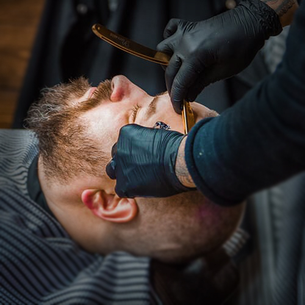

<section class="services">
  <div class="container">
    <div class="services__body">
      <h2 class="section-title services">
        услуги <br />
        барбершопа
      </h2>
      <div class="min-container">
        <div class="services__main-items">
          <div class="services__main-item hair">
            <div class="services__box">
              <header class="services__header">
                <h3 class="services__main-item-text">
                  <span>МУЖСКИЕ</span>
                  <br />
                  <strong>СТРИЖКИ</strong>
                </h3>
                <p class="services__subtitle">ЛУЧШЕЕ КАЧЕСТВО</p>
              </header>
              <div class="services__button">
                <a class="button button-ghost" href="#"> всё о стрижках</a>
              </div>
            </div>
          </div>
          <div class="services__main-item beard">
            <div class="services__box">
              <header class="services__header">
                <h3 class="services__main-item-text">
                  <span>Стрижка</span>
                  <br />
                  <strong>УСОВ И БОРОДЫ</strong>
                </h3>
                <p class="services__subtitle">НАША СПЕЦИАЛИЗАЦИЯ</p>
              </header>
              <div class="services__button">
                <a class="button button-ghost" href="#">усы и борода</a>
              </div>
            </div>
          </div>
        </div>
        <div class="services__secondary-items">
          <div class="services__secondary-item shave">
            <h3 class="services__secondary-title">
              <strong>Бритьё</strong>
              <br />
              бороды и головы
            </h3>
            <div class="services__secondary-button">
              <div
                class="button button-ghost--light button-tab"
                href="#"
                data-tab="#tab1"
              >
                услуги бритья
              </div>
            </div>
          </div>
          <div class="services__secondary-item razor">
            <h3 class="services__secondary-title">
              <strong>Королевское</strong>
              <br />
              бритьё
            </h3>
            <div class="services__secondary-button">
              <div
                class="button button-ghost--light button-tab"
                href="#"
                data-tab="#tab2"
              >
                для ценителей
              </div>
            </div>
          </div>
          <div class="services__secondary-item tattoo">
            <h3 class="services__secondary-title">
              <strong>Нанесение</strong>
              <br />
              татуировок
            </h3>
            <div class="services__secondary-button">
              <div
                class="button button-ghost--light button-tab"
                href="#"
                data-tab="#tab3"
              >
                Услуги тату салона
              </div>
            </div>
          </div>
          <div class="services__secondary-item spa">
            <h3 class="services__secondary-title">
              <strong>Барбер–SPA</strong>
              <br />
              Услуги
            </h3>
            <div class="services__secondary-button locked">
              <div class="button button-locked" href="#">скоро</div>
            </div>
          </div>
        </div>
        <div class="services__main-tab">
          <div class="services__item-tab none" id="tab1">
            
            <div class="services__tab-textpart">
              <strong class="services__tab-title"
                >Опасное бритье: суть и особенности</strong
              >
              <p class="services__tab-subtitle">
                БРИТЬЁ В BARBER – ЭТО САМЫЙ НАСТОЯЩИЙ РИТУАЛ С СОХРАНЕНИЕМ
                ТРАДИЦИЙ НАШИХ ПРЕДКОВ. ЭТОТ ПРОЦЕСС НЕ БЫСТРЫЙ, НО ИМЕННО
                НЕСПЕШНОСТЬ И АККУРАТНОСТЬ ДЕЛАЕТ ЕГО НАСТОЯЩИМ РЕЛАКСОМ ДЛЯ
                ЭСТЕТОВ.
              </p>
              <p class="services__tab-text">
                В отличие от «Королевского бритья» классическое бритье
                осуществляется двумя инструментами в два приёма: машинкой для
                бритья или шаветкой; сначала по направлению, а затем против
                направления роста волос, обеспечивая таким образом максимально
                гладкую кожу.
              </p>
              <p class="services__tab-text">
                Барберы, работающие в сети барбершопов Barber филигранно владеют
                искусством бритья: отбор мастеров очень строгий, обучение
                каждого барбера проводит ведущий барбер, имеющий сертификат
                «American Crew». Помимо постоянного получения опыта, владельцы
                филиалов работают над прокачкой скилла своих сотрудников.
                Мастера Barber хранят традиции классического бритья, тщательно
                подходят к выбору инструментов и косметики для данной процедуры.
                Для нее используются профессиональные средства для мужчин
                «American Crew», что обеспечивает стопроцентно качественный
                результат.
              </p>
              <p class="services__tab-cost">
                Стоимость опасного бритья в салонах барбершопов Barber
              </p>
              <p class="services__tab-text">
                Цена на услуги бритья бороды и головы в сети барбершопов Barber
                варьируется от 500 рублей, в зависимости от города, в котором вы
                хотите посетить мастера.
              </p>
            </div>
          </div>
          <div class="services__item-tab none" id="tab2">
            <div class="services__tab-imges">
              <div class="services__tab-deco"></div>
              
            </div>
            <div class="services__tab-textpart">
              <strong class="services__tab-title">
                Бритьё, достойное королей</strong
              >
              <p class="services__tab-subtitle">
                ТЕРМИН «КОРОЛЕВСКОЕ БРИТЬЁ» НЕПОСРЕДСТВЕННО СВЯЗАН С ИМЕНЕМ
                УИЛЬЯМА ТРУФИТА, ОТКРЫВШЕГО СВОЮ ПЕРВУЮ ЦИРЮЛЬНЮ В 1805-М ГОДУ В
                ЛОНДОНЕ, И ВПОСЛЕДСТВИИ СТАВШЕГО ОСНОВАТЕЛЕМ МАРКИ "TRUEFITT &
                HILL". ЕГО ЗАВЕДЕНИЕ ЗАСЛУЖИЛО ВЫСОЧАЙШУЮ РЕПУТАЦИЮ СРЕДИ
                АНГЛИЙСКИХ АРИСТОКРАТОВ И ПОЛУЧИЛО ПРИЗНАНИЕ МОНАРХОВ
                ВЕЛИКОБРИТАНИИ — ИМЕННО ПРОДУКЦИЯ ТРУФИТА ПОЛУЧИЛА ЭКСКЛЮЗИВНЫЕ
                ПРИВИЛЕГИИ КОРОЛЕВСКОГО ДВОРА. ТОГДА ЖЕ БЫЛИ ЗАЛОЖЕНЫ ОСНОВЫ
                ЭТОЙ СТАТУСНОЙ ПРОЦЕДУРЫ.
              </p>
              <p class="services__tab-text">
                Что же необходимо для того, чтобы бритьё стало «королевским»?
              </p>
              <p class="services__tab-text">
                Во-первых, правильная опасная бритва и барбер, умеющий с ней
                обращаться. Наши опытные мастера прошли специальное обучение и
                повышение квалификации по стандартам и правилам "Truefitt &
                Hill".
              </p>
              <p class="services__tab-text">
                Во-вторых, мужская косметика премиум-класса от "Truefitt &
                Hill". Это по-настоящему элитные средства для бритья и ухода за
                кожей. Масла, мыло и бальзамы высочайшего качества на основе
                проверенных за два века рецептов, и с применением самых
                современных технологий.
              </p>
              <span class="services__tab-littletext">
                Королевское бритьё — это настоящий ритуал, состоящий из
                нескольких этапов:
              </span>
              <ul class="services__tab-stages">
                <li class="services__tab-stage">
                  Первый этап: нанесение масла
                </li>
                <li class="services__tab-stage">
                  Второй этап: распаривание кожи полотенцем
                </li>
                <li class="services__tab-stage">Третий этап: нанесение пены</li>
                <li class="services__tab-stage">
                  Четвёртый этап: бритьё опасной бритвой
                </li>
                <li class="services__tab-stage">
                  Пятый этап: холодный компресс
                </li>
                <li class="services__tab-stage">
                  Шестой этап: нанесение средства после бритья
                </li>
                <li class="services__tab-stage">
                  Седьмой этап: нанесение одеколона
                </li>
              </ul>
              <p class="services__tab-text">
                Цена на услуги королевского бритья в сети барбершопов Barber
                варьируется от 1500 рублей, в зависимости от города, в котором
                вы хотите посетить мастера.
              </p>
            </div>
          </div>
          <div class="services__item-tab" id="tab3">
            
            <div class="services__tab-textpart">
              <strong class="services__tab-title">
                Сколько стоит сделать татуировку?</strong
              >
              <p class="services__tab-text">
                Сколько стоит сделать татуировку? В среднем, сделать татуировку
                в барбершопе OldBoy будет стоить от 2000 рублей. Но конечное
                значение цены на тату зависит от множеств факторов. Важно
                учесть: размер, расцветку, стиль тату, направление, место для
                нанесения
              </p>
              <p class="services__tab-text">
                Иными словами, стоимость услуги обсуждается индивидуально с
                тату-мастером на бесплатной консультации. Он обязательно
                проконсультирует вас по всем видам тату-искусства, поможет
                определиться со стилистическим направлением, профессионально
                подберет цвет и, если вы сомневаетесь насчет места для будущей
                татуировки — подскажет свысока своего опыта.
              </p>
              <p class="services__tab-subtitle">
                Гарантии безопасности и качества
              </p>
              <p class="services__tab-text">
                Решиться на татуировку — смелый поступок, но он должен быть
                обдуманным и согласованным с вашим внутренним «Я». Есть также
                еще один важный аспект: санитарные нормы тату-салона,
                безопасность, стерильность и портфолио мастера, к которому вы
                обращаетесь.
              </p>
              <p class="services__tab-text">
                В сети барбершопов OldBoy имеются тату-салоны, где мастера
                проходят через жесткую конкуренцию и строгий отбор по портфолио
                и навыкам, затем, проходят обязательную сертификацию и
                аттестацию. И только потом принимаются для работы в барбершоп.
              </p>
              <p class="services__tab-text">
                Тату кабинеты оснащены последними технологиями, соответствуют
                всем санитарно-гигиенические нормы и имеют лицензии. В своей
                работе мастера используют современное оборудование, качественные
                краски и одноразовые расходные материалы.
              </p>
              <p class="services__tab-text">
                Стаж работы некоторых наших тату-мастеров более 10-ти лет.
                Преимущество каждого из них — творческий подход к делу, весомое
                портфолио и ни одна сотня довольных клиентов, которые
                возвращаются к нам снова и снова.
              </p>
            </div>
          </div>
        </div>
      </div>
    </div>
  </div>
</section>
